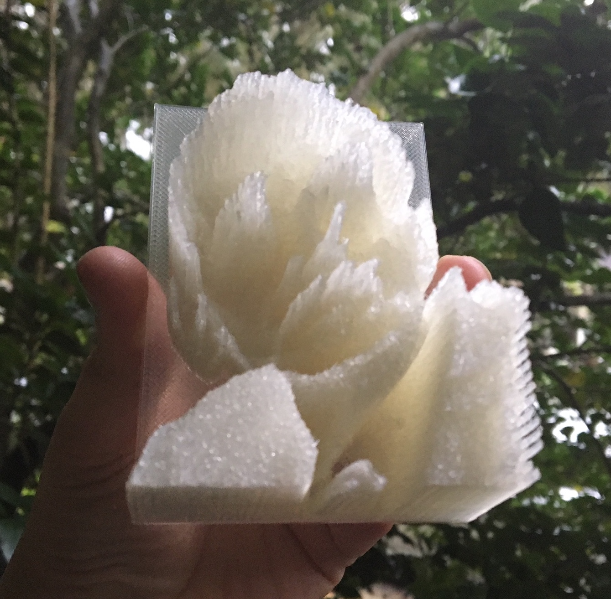
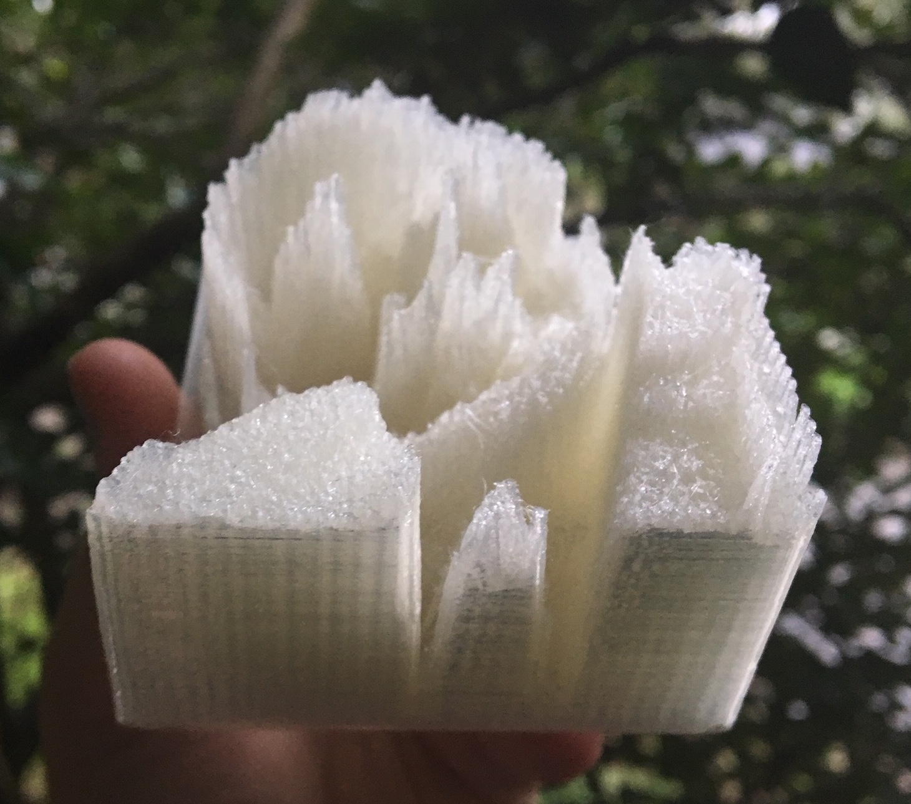
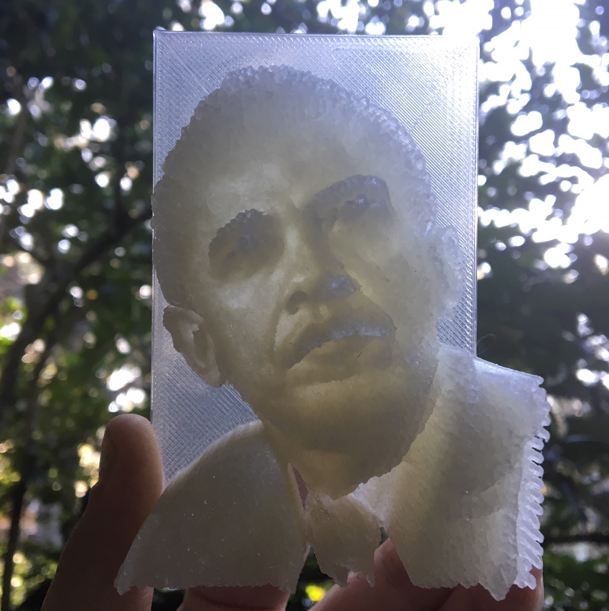
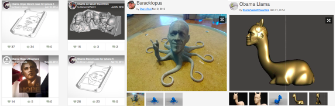

Visions of Accessibility for Every Body
“In her biography of Picasso, Gertrude Stein observes that what changes over time is what is seen and what is seen results from how everybody’s doing everything. What is seen depends on what there is to see and how we look at it.” -- George Roeder
All bodies and experiences are different, so how we do digital visual studies should encourage difference and account for multiple ways of seeing and experiencing visual data. Prioritizing accessibility in digital visual studies invites us to rethink not only how rhetoric shapes scholarly discourse about bodies (and vice versa 2) but also the relationships between technologies, visual information, and embodied experiences. Frequently, access is framed in terms of availability, if people have the computers, software, or tools needed to get or produce information. On the other hand, accessibility involves how humans process and engage information. Sushil K. Oswal argues, “accessibility can be defined as the ability to use, enjoy, perform, work on, avail of, and participate in a resource, technology, activity, opportunity, or product at an equal or comparable level with others” (2013). Yet, ideas of equality (as great as that sounds) also imply normative values. Who decides what is equal? How do we compare? Instead of attempting to create equal access to a text or experience, I suggest thinking about accessibility as designing for difference; designing, in other words, in a way that doesn’t assume a static text or a static body. Disability studies, in particular, reminds us to challenge ideas of normative bodies and practices of processing information. As Cynthia Lewiecki-Wilson and Brenda Jo Brueggeman explain, “disability studies asks us to think carefully about language and its effects, to understand the role of the body in learning and writing, to view bodies and minds as inherently and wonderfully divergent, to consider issues of access and exclusion in policies and in the environment, and to re-engage with theories of difference and diversity” (1). As we use emerging technologies to study or share, we need to consider research methods and methodologies that consider multiple ways of accessing, understanding, and engaging with visual data - approaches that foreground bodily difference and accessibility.
Recent work by rhetoric, composition, and disability scholars model approaches that move beyond traditionally verbal/visual means to consider multisensory ways of seeing and knowing. For example, Shannon Walters book Rhetorical Touch rereads ancient rhetoric through disability studies and argues for understanding touch as a rhetorical art that reshapes the traditional rhetorical appeals. Walters examines haptic technologies to decenter primarily visual modes of analysis and emphasizes that “the sense of touch is not simply a neutral or natural interface that seamlessly connects bodies and technologies but is overlaid with assumptions about bodies, minds, and interactions” —assumptions that are always changing (179). Singling out any one sense or perspective limits how we can interact with digital technologies and often privileges one version of a text or user. Accessibility is not merely about difference, open access, or technological advances, but engaging the diverse lived experiences of people and the multisensory ways we process visual information.
For a few, universal design offers an “ideal” approach. Typically, when adapting a text, image, or space to create accessibility, a normative body becomes standard and principles of design focus on removing barriers to accommodate anyone who is different. As Melanie Yergeau notes, “To accommodate is to retrofit; it is to assume normative bodies as default and to build spaces and infrastructures around those normative default bodies; it is to deal with deviant bodily and spatial conditions as they bubble out at the seams” (2014). Again, we can reference ideas of an original text and attempts to retrofit content through close captioning to make a text accessible for different users. Universal design, in contrast, focuses on designing products and spaces that are usable and beneficial to everyone, “not specifically people with disabilities, but all people” (Mace). Unfortunately, as Michael J. Salvo points out, universal design is an ideal and an impossibility – there is no such thing as a text that works for everyone (2013). In conjunction, focusing on human bodies ignores the nonhuman actants and diverse situations that also shape how we process information and interact with visual data. So how can digital visual studies apply design principles to digital resources and make content more compatible with multiple types of devices, a diverse community of users, and evolving ideas of accessibility?
I propose we move on from ideas of “universal” or “ideal” and build on the work of designing for the lived experience of accessibility through critical making approaches. Building on the work of new materialism, design studies, science and technology studies, and information systems, Matt Ratto coined the term critical making to describe “the combination of critical thinking with hands-on making—a kind of pedagogical practice that uses material engagements with technologies to open up and extend critical social reflection” (Conversations in Critical Making). Similar to practices of critical design (Dunne and Raby 2013) or participatory design, the hands-on practice of critical making challenges universal, human-centered prototypes and instead translates social or political questions into material forms to demonstrate the complex relationships between images and objects as well as technology and society. Much like the versioning of Boyle and Rivers, and the digital images of Hansen, critical making also forwards design as part of the meaning making process, emphasizes lived experience, and encourages multiple versions of seeing and knowing. In designing for lived experiences, we abandon universalizing ontologies and embrace possibility as part of accessibility, allowing for generative difference. In other words, through critical making, we resist norms, ideals, and standards and create room for alternative experiences that work for a specific situation. For example, when designing a prosthetic so that a child with a missing limb can play tennis, we don’t have to create a hand that can hold a racket, but instead can create a prosthetic that is a racket. Instead of retrofitting or accommodating a norm or original, designers can create in ways that embrace difference. Such foregrounding is especially important in that, here, accessibility is perceived as a problem of design rather than a problem of human bodies.3 By critically tinkering with designs, we can explore diverse experiences of visual data and invent new sense-making methods for doing digital visual study.
Critical making offers more accessible approaches to doing digital visual study by emphasizing process over product, which prioritizes ideas of difference and lived experience from the start. Instead of focusing exclusively on end products or default users, critical making uses the process of creation to examine and generate material-semiotic relationships within and between socio-technical environments. Flipping traditional approaches to visual analysis, critical making asks, “what can I learn from doing” and “how can I create something that illustrates a specific idea or purpose?” Thus, the making process is one of discovery and invention, a creative inquiry that can change and adapt to diverse circumstances. Accessibility is an ever changing concept, always constructed as a part of a “network of activities” particular to a body, place, time, and purpose (Spinuzzi, 193). By prioritizing accessibility and embracing difference, critical making calls into question a default text, image, body, technology, and/or even method. There is no one way, one text, authoritative “aura,” or single entry point to access knowledge. Instead, makers experiment with design and discover different ways to see, sense, and understand through the process of making.
Following disability studies call to explore new languages and embodied difference, critical making also creates opportunities to study images, objects, and technologies in ways that move beyond primarily optical iterations. Sarah Ganz Blythe, Director of Education at the RISD Museum, advocates “learning from objects as primary sources by looking, analyzing, and contextualizing. Such learning helps us form a language for communicating responses to art and design, and in turn fosters the creation of art and design objects that speak their own language” (Somerson, 24). But learning and language already involve more than looking, and as such should also encourage more than optical methods of study, especially if we are designing for difference and accessibility.
Critical making helps to frame digital accessibility as an emerging literacy practice that can shape how we engage new technologies for doing digital visual study. Shifting the focus from an end product or text to process and production helps to generate embodied, multisensory experiences. With 3D printing, even in clicking on designs, rotating models, or printing samples, users move, feel, and interact with digital data in different, physical ways. Such experiences also highlight the multifaceted kinds of labor that go into creating objects of study. The embodied work of remixing an image, making a video, or modeling an object is always more than just visual. However, youtube tutorials, makeover shows, pinterest boards, and even scholarly publications tend emphasize finished products and optical engagement. Critical making, on the other hand, draws attention to the tactical, laborios production process of image making and the embodied experiences and insights that emerge along the way.
When adapting an image, makers, artists, and scholars must account for the techne (craft) of rendering a 3D model, but must also make decisions about representation and how best to display visual information. Figuring out how to represent visual data in 3D form, with the appropriate materials, to the correct scale, etc, changes with each iteration and attempt. When creating 3D prints, the modeling, sculpting, rotating, testing, revising, etc. involves handiwork by both humans and computer aided design (CAD). The CAD elements emphasize how doing digital visual study is a multi-sensory collaboration between human and non-human actants that shape a digital artifact. Computers might process aspects of an image and create a 3D render, but sculpting the model requires a user to move a mouse or touch a screen to refine the form. Printers heat up materials and move from point to point to physically build a 3D print, while participants slow down or speed up the process, touching and testing the materials to create specific effects. Monitoring the printing involves listening for a continuous hum and paying attention to any smells that might indicate burning or an error. Any editing or remix process is already embodied, but critical making focuses on the haptic work of research production - a process of labor that is always both mental and physical and dependent on multiple senses such as sight, touch, and even smell.
Critical making, in fact, might be best understood as a methodology that I call “sense-making” to understand, tinker, and invent. By sense-making, I mean the use of our physical senses to gather and understand information. Critical making invites users to think outside of traditional language-based methodologies and use our senses to create, both for ourselves and others, embodied, multisensory experiences with technologies. For instance, to revise Obama Hope, I tinkered with different tools and technologies that could help reframe the image and create a texture and topography that is both seen and felt. Once I decided on a 3D printed version of Obama Hope, I experimented with materials and form to see how changing variables changed the way people experienced the image. I started with an image of Obama, inverted the curvature of the face, translated the different colors into wavelengths of light, and printed each iteration so that I could both see and touch different versions of the digital visual data. Altering color, texture, and content, I played with the flexibility of the image to create a version that best fit my specific purpose - to display the visual data in a new way that encourages different ways of seeing. This process may sound a little touchy-feely, but that is exactly the point. Critical making encourages us to use our hands, to reframe how we approach data, and to incorporate different sensory modes to refine knowledge and challenge normative assumptions.
  Figure 5. 3D printed lithophane of Barak Obama at three angles showing texture and light.
While critical making emphasizes process over product, I argue that critical making also draws attention to how materials matter. In Still Life with Rhetoric, Gries advocates for moving beyond thinking of images as representations or even signs and instead to focus on their thingness, their ability to both materialize and generate material consequences as other bodies and entities enter into relations with them. Critical making can assist such efforts by generating 3d things that become not only objects of study, but powerful agents, in their own right, that can transform and (re)assemble the social, challenging normative views and values. A 3D printed Obama Hope becomes an actant for change with regard to accessibility communities like Thingiverse. While many remixes of Obama Hope exist in 2D form, Thingiverse has over 60 3D models that feature an image of President Obama - from printable phone cases with Obama Hope and new versions of Mount Rushmore, to animal remakes of Obama like the Obama -lama and Bracatapus. These 3D models might seem a bit diverse and perhaps even ridiculous, but they also illustrate the many versions of images that can circulate through dynamic digital ecologies.
Figure 6. 3D printed designs featuring Barack Obama on Thingiverse – a Mount Rushmore with Obama, 3D printed lithophane, phone cases, Baracktopus, and Obama Llama. Credit: CC license on Thingiverse
Along these same new materialist lines, critical making helps turn attention the complex ecology of entities that are always at play in production - the diverse tools, technologies, and networks help create, transform, and circulate image objects of invention. For example, creating and revising models such as Obama Hope highlights how digital visual artifacts emerge through dynamic ecologies that involve multiple bodies, devices, materials, platforms, storage sites, and networks. Such experiences draw attention to the larger material impacts beyond what one individual can see or touch - from the power used to run a 3D printer, to the cloud storage for photoshop accounts, to the discarded drafts that end up as waste. And in demanding tactile engagement with such entities, critical making encourages a social-material approach in which critical thinking balances the socio-technical experience of making things, with potential to intervene in emerging technical landscapes and lived experiences. As such, I argue, critical making opens up opportunities to understand and experience the relationships between bodies, technologies, information, and visual things - relationships that are always different for each body that enters into them.
Critical making will not fix all the issues surrounding accessibility, however, the making process challenges scholars to consider alternate points of view, embodied experiences, and new ways of creating knowledge. Admittedly, critical making is a hopeful process, a methodology that embraces difference as a site for rhetorical invention and scholarly inquiry in the hopes of creating more accessible experiences for diverse bodies. However, making is not about demonstrating expertise, but about the hands-on, trial and error process of experimentation. Failure is always part of the knowledge process and important to learning through doing. As such, critical making is also skeptical of cure-all solutions or practice makes perfect ideologies. The making process is not just about producing one perfect thing, or working with one sense, but going through the process repeatedly, as a sense-making practice that can change and evolve with each version. Senses change, bodies change, even what we know changes - so too must the ways we study digital images. By experimenting with designs, critical making explores different ways of understanding images and fosters diverse possibilities for doing digital visual studies. 3D printing, I argue, is a particularly productive critical making practice in that it can simultaneously make new versions of digital visual images, open up different sensory experiences for viewers, and investigate how emerging technology influences social relations (i.e. becomes rhetorical).
2. Jay Dolmage also argues for “critical alliance between disability studies and rhetoric” where “rhetoricians pay close attention to embodied difference; in turn, rhetorical approaches would give disability studies scholars means of understanding the debates that in part shape these bodies."↩
3. And as Susan Hendren points out, “all technology is assistive” in some sense, so by decentering a default body and focusing on design we can establish “rules” that integrate accessibility from the ground up. See Hendren, 2014.↩